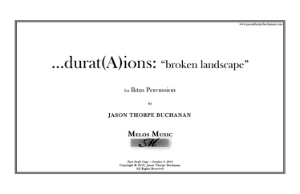

VIEW SCORE:
ABOUT THE WORK:
-
...durat(A)ions: 'broken landscape' (2013)
-
Instrumentation: and percussion quartet
-
Dedication: For Iktus Percussion
-
Purchasing information: Digital Score PDF: $14.95, Score and Parts + Visual Stopwatch Max Patch: $79.95
-
Contact: jasontbuchanan[at]gmail.com
-
PROGRAM NOTES:
…durat(A)ions: “broken landscape”. Written for IKTUS PERCUSSION, this quartet is in a way (both) a commentary on (and exercise in) the futility of unwavering adherence to rigid systems of organization and the culture embracing intellectual self-gratification that has become rampant in our relatively obscure (and seemingly insignificant) “new music” social system. I have observed this behavior both in myself and in dozens of other composers in my generation, with unnecessarily complex compositional processes that are highly inefficient (and perhaps also ineffective). I find my own artistic motivations (and those of many others) for producing creative work in this manner both troubling and extremely questionable; my compositional processes have become increasingly convoluted, perhaps due to a variety of conflicting external influences (both academic and otherwise), and I truly question the incentive and justification for what we do. This work functions as self-reflection, criticism, and exploration of the creative issues that I have encountered while producing works of this nature, and the artistic issues that arise from varying degrees of complexity on both the part of the composer and performer.
Just beyond the realm of possibility (or practicality), the score’s notation offers one potential realization of randomly generated time points, blocking out the length of event streams that regulate contrast and form in the work. The composer’s role then was firstly in assigning sonic materials to each of these events, based largely on alignment points between twelve individual streams (three for each percussionist: sustained sounds, articulated sounds, and vocalizations) and guidelines based on contrast /similarity. The entire process became increasingly varied and intricate; some events were notated precisely by parsing data taken from the proportional relationships of event streams to generate rhythmic material algorithmically, while others were worked out intuitively, and some marked only “ad libitum” with an assigned object or sound type and minimal performance directions. I’ve found that this surrender of control allows for greater variability and virtuosic potential by bringing the performer’s own creative experiences and self into the work. The sheer mass of notated information necessitates a state of constant real-time prioritization of select musical parameters or events (at the discretion of the performer) over others, due to both physical and cognitive constraints, resulting in heightened intensity and spontaneity throughout the course of the work. In other words, it is not expected that the notation will be executed rigidly, or be consistent from one performance to the next. Rather, the score is utilized as a point of departure. While both performer and composer are forced to navigate this spectrum between control and loss thereof, my intention is that enough passages are so completely saturated with information that they will gradually infect the performer’s gestural reservoir and behavior, informing their quasi-improvisational passages by context alone.
A number of homemade instruments are utilized in the work, including lightbulb chimes, prepared snare drums, and a large amplified “box” or resonating chamber with extension springs, metallic studs, and contact microphones, that pull together individual event streams for greater timbral cohesion. The relationships between individual percussion parts are governed not by a conductor, click track, or other audible means, but rather by a digital stopwatch that corresponds to markers in the score. The result is a completely fluid and elastic sense of time, with individual event streams functioning as simultaneities rather than synchronizations, allowing greater interpretive and creative freedom to the performer. The third stream (ahem, of data) for each performer consists of vocalizations, derived from a broken down translation of the Wikipedia article Duration (philosophy): en.wikipedia.org/wiki/Duration_(philosophy) into the International Phonetic Alphabet and drastically fragmented/redistributed between each part, with related syllabic groups from each sentence scaled proportionally to the duration of the corresponding event stream. These vocalizations are always obscured/distorted, and assimilated into the texture as abstract timbral coloring rather than tangible semantic content.
Performances of ...durat(A)ions: 'broken landscape'

Las Vegas, NV

Eastman School of Music
Rochester, NY